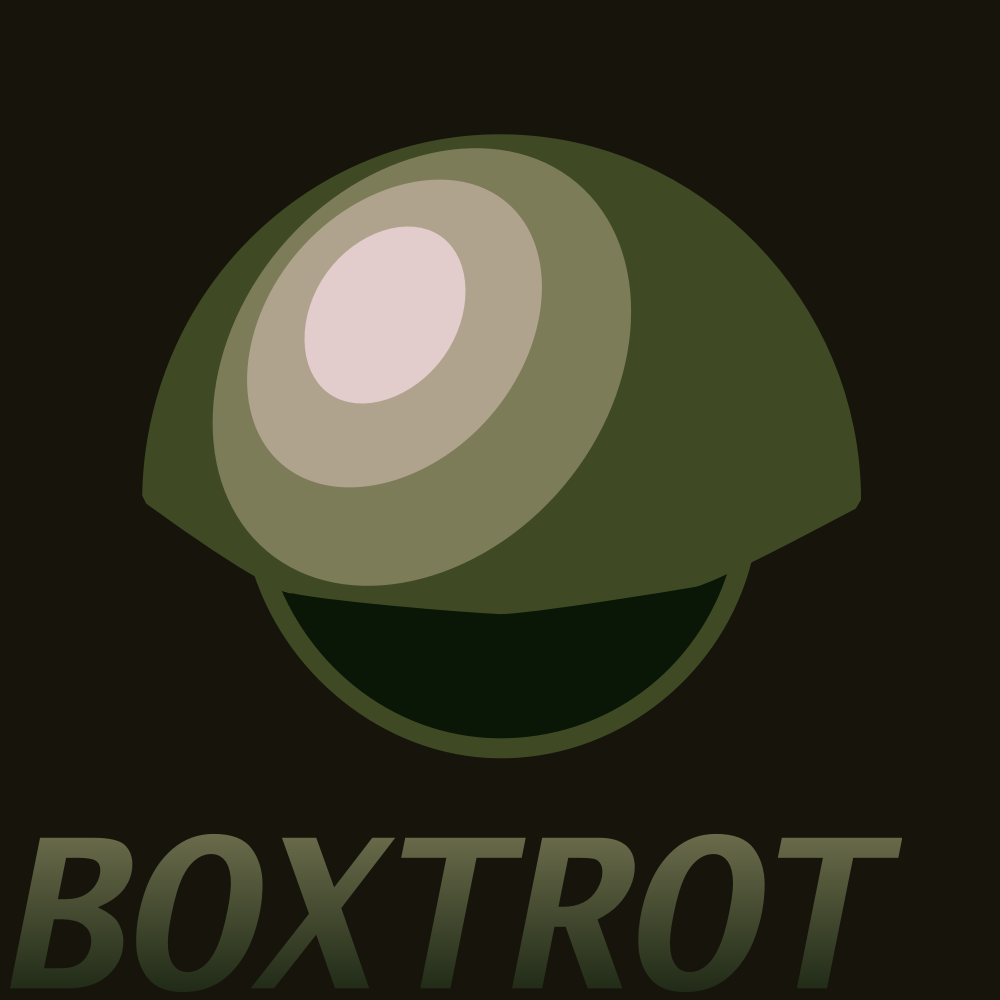
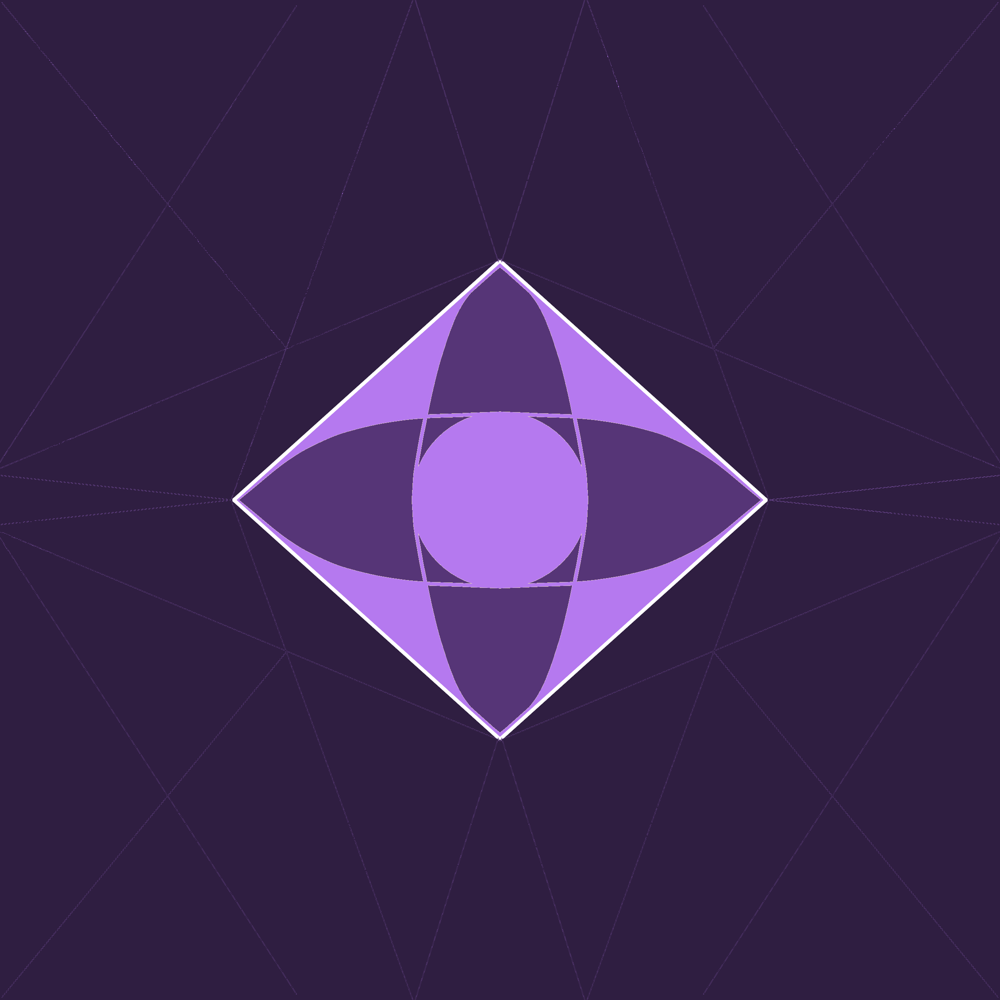
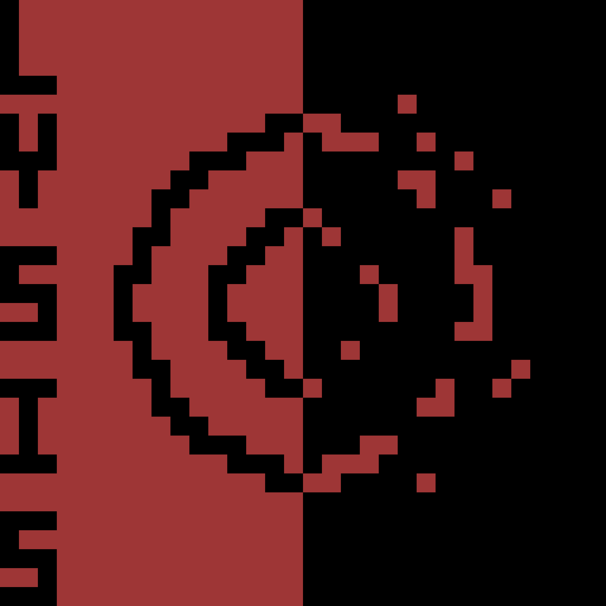
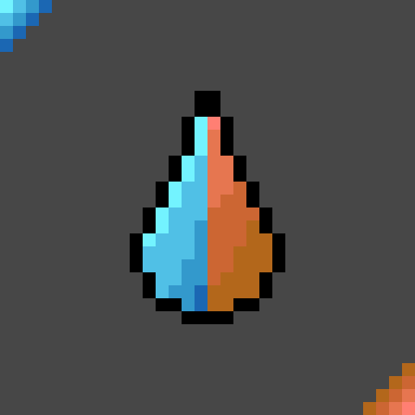

Chester, A remix of Chester by William Billings, the main theme of Boxtrot
Executioner's March, the execution theme of Boxtrot
A puzzle platformer based around coordinating a squadron of toy soldiers and using their abilities in order to clear a route for their commander. Designed for the Brainless 2026 game jam, this project won the 1st place award for creativity. Click on the header to play it!
Chester, A remix of Chester by William Billings, the main theme of Boxtrot
Executioner's March, the execution theme of Boxtrot

Inspired by the likes of Cave Story and Hollow Knight, Chronomancer is an action metroidvania where you are sent to an alien world to search for your lost brother, a soldier sent to assist the inhabitants. Upon your arrival, you find the planet has been overun by a creeping, vile corruption, spreading like weeds, infecting the inhabitants of this once glorious world. What once were innocent creatures are ravaged by hunger and bloodlust, and you seem to be a fine meal. Your brother was a soldier - he was equipped for this. You are not. Armed with just a scythe, you must use your species' power to manipulate time to keep yourself alive, and find your brother again.
An Eternal Present - Ambient Theme of Act 1
The Beginning of a Certain End - Theme of the Act 1 boss
Pixel (Placeholder Name) - Theme of the Act 3 Miniboss

Lysis is a roguelike top down shooter, heavily inspired by the Risk of Rain Franchise. You take the role of a lone bacterial cell in a foreign immune system. Your goal? Try to infect and take control your host. You start undetected, it will not last. You've only got a few moments before its onslaught begins. Make them count.
Incubation - Lysis Stage 1 Theme
With A Skull Upon This Mast - Theme of the Rogue Mast Cell

Rainstorm is a track composed for the Brainelss 2026 Music Jam. Inspired by heavy rain in my area during the event, Rainstorm is a two movement percussion ensemble track representing the passing of a rainstorm, starting with a light drizzle and building toward a climactic finish with thunder and lightning. It placed 18th of 179 for production.It was later selected as the soundtrack to STOBLIX's Subject: OUTSIDE, a submission to the 2026 Bad Ideas Game Jam

A track inspired by two contrasting weapons used in the revolutionary era. The fusil was a high-status flintlock rifle, typically reserved for elite units. Flares refer to congreve rockets - bomb-like artilery used to destroy large amounts of land and devastate armies. One weapon is a noble, personal firearm. The other? A non-discriminatory shell of death. This track is built to represnt the contrast of these weapons. This track was submitted to the 2026 Mini guy music fight, placing 25th of 157 for production and 26th for overall enjoyment.

Assorted examples of some of my older works. These were made in Musescore.
An ocrhestral remix of Ultrakill's Tenebre Rosso Sangue
An orchestral remix of Cave story's main theme
A remix of Cave story's track Oppression
City of the Clouds - Original song